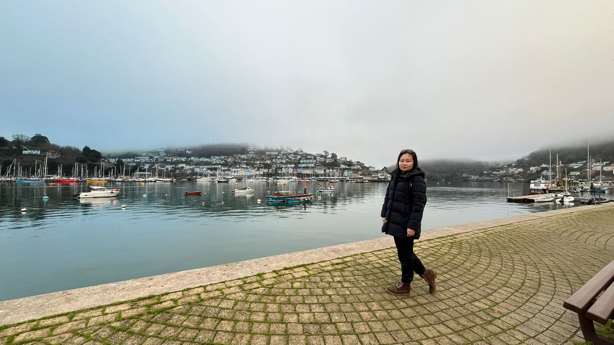
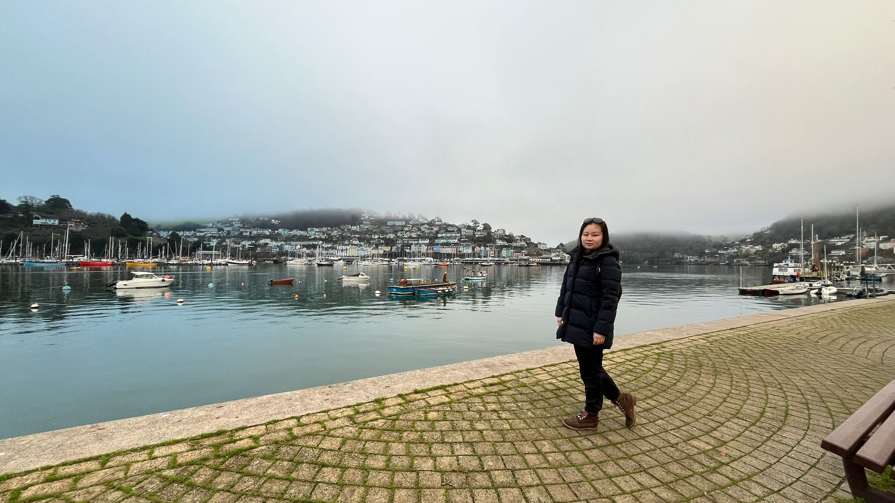
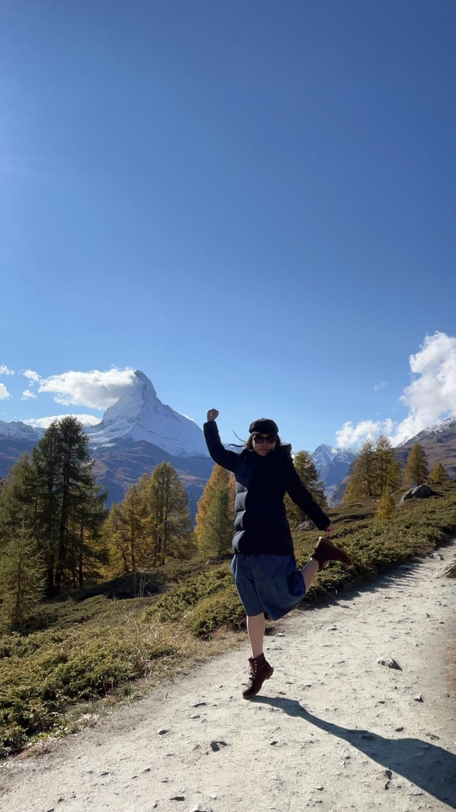
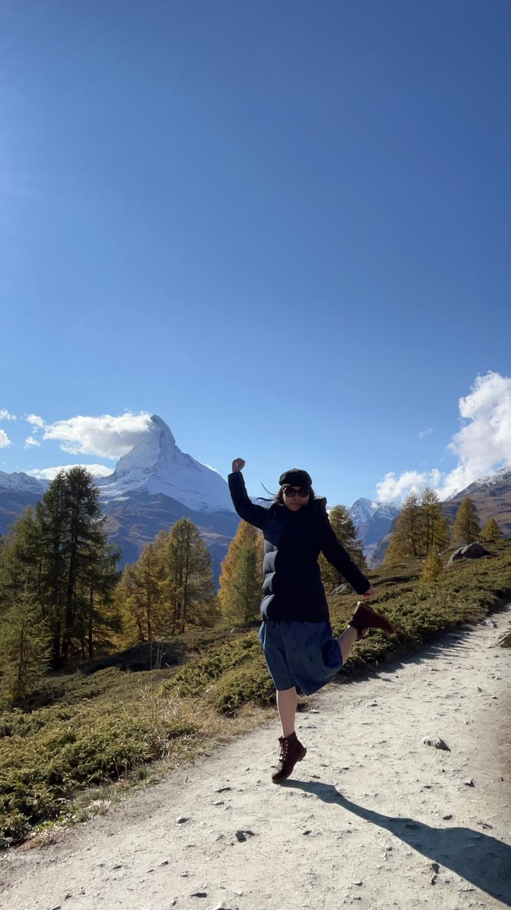

Last week, I had an opportunity to participate in three-day online WomenHack AI bootcamp hosted by Siemens.
Most of the participants were employees working based in Germany. Before joining the bootcamp, I spent almost two weeks figuring out how to access their Microsoft Teams. When I was about to give up, I managed to join the group.
When the bootcamp started, I was assigned a task that was differnt from what I had chosen during the registration. However, I quickly adapted to the new task and understood what needed to be done. It turned out to be a similar process to what I had done during the previous summar data innovation bootcamp, but with different tasks and a focus on Siemens' powering system consulting. Our group's task was to create a chatbot that can assist their daily works.
During this bootcamp, I learned how to create the MVP from scratch by myself, which was a different experience and acquired another way to form the pitch. Meanwhile, I also found more solutions for the previous bootcamp. Most importantly, I learned how to collaborate with teammates from different countries during this bootcamp.
Happy Mid-Autumn Festival
Posted: 17th September 2024
Mid-Autumn Festival
I am Nobody! Who are you?
Posted: 12th September 2024
I’m Nobody! Who are you?
Are you – Nobody – too?
Then there’s a pair of us!
Don't tell! they'd advertise – you know!
How dreary – to be – Somebody!
How public – like a Frog –
To tell one’s name – the livelong June –
To an admiring Bog!
I Carry Your Heart
Posted: 9th September 2024
i carry your heart with me (i carry it in
my heart) i am never without it (anywhere
i go you go, my dear; and whatever is done
by only me is your doing, my darling)
i fear
no fate (for you are my fate, my sweet) i want
no world (for beautiful you are my world, my true)
and it's you are whatever a moon has always meant
and whatever a sun will always sing is you
here is the deepest secret nobody knows
(here is the root of the root and the bud of the bud
and the sky of the sky of a tree called life; which grows
higher than soul can hope or mind can hide)
and this is the wonder that's keeping the stars apart
i carry your heart (i carry it in my heart)
"I carry your heart with me!"- E.E. Cummings, 1904-1962
The End of the Social Network
Posted: 1st September 2024
Social media is no longer very social.
According to the article from The Economist, Americans have decreased their online life documentation from 40% to 28% since 2020, and this article also discussed the possibility of closing platforms such as WhatsApp and Telegram (Wilson, 2024).
This article reminded me of my first time recording my life and posting it online. It dates back to my university days. At that time, writing a blog, posting your photos, and sharing your thoughts on the platform were popular. However, I encountered my blog being hacked, and all of my photos were being deleted. It was a horrible experience for me. After that, I only posted my things in private. Those posts and photos are only for my records and remind me of what I did and how I felt at that time.
In the future, I think people may tend to use photos and videos to record their daily lives and post them on social media instead of sharing their daily lives through words.


 

 
